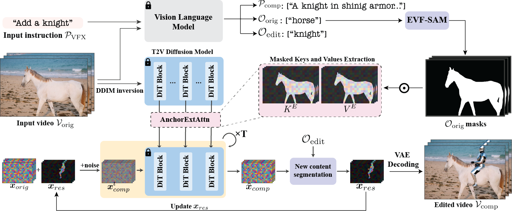

We present a method for augmenting real-world videos with newly generated dynamic content. Given an input video and a simple user-provided text instruction describing the desired content, our method synthesizes dynamic objects or complex scene effects that naturally interact with the existing scene over time. The position, appearance, and motion of the new content are seamlessly integrated into the original footage while accounting for camera motion, occlusions, and interactions with other dynamic objects in the scene, resulting in a cohesive and realistic output video. We achieve this via a zero-shot, training-free framework that harnesses a pre-trained transformer-based text-to-video diffusion model to synthesize the new content and a pre-trained Vision Language Model to envision the augmented scene in detail. Specifically, we introduce a novel sampling-based method that manipulates features within the attention mechanism, enabling accurate localization and seamless integration of the new content while preserving the integrity of the original scene. Our method is fully automated, requiring only a simple user instruction. We demonstrate its effectiveness on a wide range of edits applied to real-world videos, encompassing diverse objects and scenarios involving both camera and object motion.

Given an input video $\mathbf{V}_{orig}$, we apply DDIM inversion and extract spatiotemporal keys and values $[\mathbf{K}_{orig}, \mathbf{V}_{orig}]$ from the original noisy latents. Given the user instruction $\mathbf{P}_{VFX}$ we instruct the VLM to envision the augmented scene and output the text edit prompt $\mathbf{P}_{comp}$, prominent object descriptions $\mathbf{O}_{orig}$ that are used to mask out the extracted keys and values and target object descriptions $\mathbf{O}_{edit}$. We estimate a residual ${x}_{res}$ to the original video latent ${x}_{{orig}}$. This is done by iteratively applying SDEdit with our Anchor Extended Attention, segmenting the target objects $(\mathbf{O}_{edit})$ from the clean result, and updating ${x}_{res}$ accordingly.@misc{yatim2025dynvfxaugmentingrealvideos,
title={DynVFX: Augmenting Real Videos with Dynamic Content},
author={Danah Yatim and Rafail Fridman and Omer Bar-Tal and Tali Dekel},
year={2025},
eprint={2502.03621},
archivePrefix={arXiv},
primaryClass={cs.CV},
url={https://arxiv.org/abs/2502.03621},
}